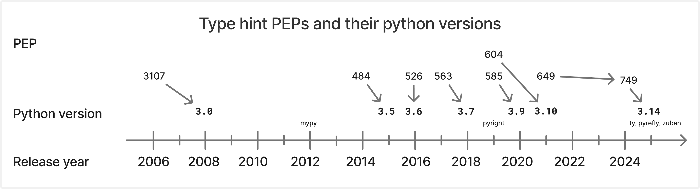

So while Python remains dynamic, Python programs can now be
gradually typed. Meaning as the programmer, you can choose to annotate
parts of your code and use external tooling to check type
safety. The result is a single program mixing dynamically typed code
with statically type-checked code, depending on where you add your
annotations. You benefit from both worlds without having to use two
separate languages - one dynamically typed, the other statically typed.
However at runtime, Python's dynamic nature prevails.
Typing PEPs
Python's type system has
a history which can be understood by reading through the relevant PEPs
which build upon one another:

PEP 3107 standardised the way to annotate a function's parameters and
return value while PEP 484 officialised the main use-case for these
function annotations: "type hints". Next, PEP 526
extended the use of such type hints to all variables - not just for
function parameters and return value anymore.
It is these type hints that makes Python gradually-typed. The programmer
can explicitly delineate which part of the program can be statically
analyzed and which part will escape such analysis.
The typed parts of your program benefit from known pros such as better
LSP completions, better self-documented code, and most importantly
catching type errors before runtime using a
type checker. In 2025, you can choose from:
mypy, the OG type checker
(2012), followed by
pyright (2019)
the newcomers, more modern, faster, and often implemented in Rust for
some reason:
Type hints are useful but they introduce a new problem:
undefined type hints at run time!
For example when defining container-like types, you would want to write
something like this:
class Tree: def __init__(self, left: Tree, right: Tree): self.left = left self.right = right def leaves(self) -> list[Tree]: ...
This does not work as
Tree
is not yet defined (NameError) when we try to use it to annotate the arguments of its own
__init__
method:
NameError: name 'Tree' is not defined.
Prior to 3.14, you would have to write this to make it work:
class Tree: def __init__(self, left: "Tree", right: "Tree"): self.left = left self.right = right def leaves(self) -> list["Tree"]: ...
Following PEP 484, static type checkers interpret the
'stringized' annotations as
forward references
- their unquoted equivalent defined later on - without
complaining/raising any error.
How is it possible that the Python interpreter raises an error while a
type checker is perfectly fine with the same code?
That's because static type checkers are, well, static. They
don't need to run the code. Only to analyze it. So it's not
necessarily a big problem if a piece of code is ill-defined from a
runtime perspective if it can be resolved peeking at later evaluated
code.
However, quoting type hints is cumbersome and easy to forget. To help
with this, PEP 563 introduced a
__future__
import which automatically stringifies all type hints at the module
level:
from __future__ import annotationsclass Tree: def __init__(self, left: Tree, right: Tree): self.left = left self.right = right def leaves(self) -> list[Tree]: ...
This future statement is sugar for converting all type hints to their
'stringized' form. This implies that type hints are not evaluated right
away at runtime as they are turned into plain strings but rather their
evaluation is postponed until some code access the annotations
and explicitly evaluates it. In many cases, such evaluation will not
happen as the annotation is only used as a static hint. Bypassing the
evaluation at runtime solves most forward reference problems, and doing
so is automatic with the future statement: no need to manually stringify
any problematic type hints.
The distinction between runtime and 'compile'/'definition' time is key
here, allowing Python type system to be more expressive without changing
its runtime behaviour.
In the same PEP introducing this future statement, the
typing.TYPE_CHECKING
constant is introduced to solve another type hints related problem:
circular imports.
In module A, you may need to import types from module B to annotate
module A's code although module B already depends on module A. This
circular imports problem is purely contingent on the need to annotate
the code, but it prevents the program from running due to the import
error at runtime!
To solve this, the
typing.TYPE_CHECKING
constant is hardcoded to
False
but interpreted as
True
by type checkers. See this simple example:
# In: utils.pyif TYPE_CHECKING: # Only imported for static type checking purposes # **not evaluated at runtime** from models import Userdef serialize(user: User) -> str: return f'{{"name": "{user.name}"}}'# In: models.pyfrom utils import serialize # utils also imports models!class User: def __init__(self, name: str): self.name = name def to_json(self) -> str: return serialize(self)
Because the
TYPE_CHECKING
is hardcoded to
False, the import statements under the
if
statement are never executed at runtime and circular imports issues are
thus avoided. On the other hand, type checkers treat these imports as
available for analysis as if the
TYPE_CHECKING
constant was
True
(which it's not). Generally speaking, type checkers can have a more
complete picture of the program compared to the interpreter at runtime
as they do not need to run the program, simply to analyze it.
Next, niceties were added such as being able to use standard collection
types such as
list
as generics, meaning you can write
list[T]
(PEP 585) or new syntax for writing union type using the pipe symbol
like that
A | B
(PEP 604).
Finally in PEP 649 (and 749) a new solution is devised for the forward
reference problems and handling of stringized type hints. This new
solution was accepted and is implemented in the new
python 3.14
- superseding the use of the future import introduced in PEP 563.
Typing PEPs summary
[!info] Key PEPs progressively introducing python modern type system
These 3 data structures, and python in general, provides
no guarantees about runtime type safety.
To handle ill-typed values at runtime, you would have to manually assert
correctness with
isinstance,
issubclass
checks throughout your program.
Simple example with a TypedDict
When data comes from within the program, your type checker
knows its type and can verify it satisfies the typed-dict requirements.
So in the example, below your type checker / linter will complain and
tell you you're making a type error:
from typing import TypedDictclass Payload(TypedDict): a: int b: bool c: str# data comes from within the programp = Payload( { "a": "hello", "b": 1, "c": 3.14, })"""Diagnostics:1. Argument of type "dict[str, str | int | float]" cannot be assigned to parameter "__map" of type "Payload" in function "__init__" "Literal['hello']" is not assignable to "int" "Literal[1]" is not assignable to "bool" "float" is not assignable to "str""""print("TD:", p)"""TD: {'a': 'hello', 'b': 1, 'c': 3.14}"""
However, your type checker can't inspect data coming from outside your
code via some form of input/output (I/O). For example if you're
ingesting a JSON payload stored locally on disk:
Your type checker won't warn you of any type problem since it can't know
the type in the json payload.
It infers
json.loads
return type as
Any
which can be assigned to anything. There can't be any diagnostic raised
from then on. Casting to
Any
effectively bypasses all type safety checks, 'regressing' to
fully-dynamic Python.
Note: To some extent, you could guard yourself against
this by enabling warnings when
Any
is used (flake8's
ANN-401). But
this would mean having to inspect every IO payload, essentially doing
the work Pydantic offers, see next section.
Crucially, notice that in both cases no error were raised at runtime
despite the type hints from the TD being violated every time! The
programs runs and value are interpreted correctly with their 'bad' type.
In the end, the TD is just a plain dict at runtime which simply holds
whatever values were passed with whatever their types are.
What can be done at runtime ? Enter pydantic models
This is exactly the purpose of Pydantic's models. Validating that data
follows a certain shape (read 'schema' or type) - sometimes going
further with data coercion - at runtime.
You can view Pydantic's
BaseModel
as allowing you to create dataclasses that will perform runtime type
checks.
Note: You can also wrap any Python type in Pydantic's
TypeAdapter
to have it perform runtime checks.
Using a
BaseModel, the example from earlier will now raise a
ValidationError:
import jsonfrom pydantic import BaseModel, ValidationErrorclass Payload(BaseModel): a: int b: bool c: str# I/O with pydanticwith open("payload.json", "r") as f: raw_json = json.loads(f.read())try: p = Payload.model_validate(raw_json, strict=True) # No static diagnostic stillexcept ValidationError as e: print(e) """ 3 validation errors for Payload a Input should be a valid integer [type=int_type, input_value='hello', input_type=str] For further information visit https://errors.pydantic.dev/2.11/v/int_type b Input should be a valid boolean [type=bool_type, input_value=1, input_type=int] For further information visit https://errors.pydantic.dev/2.11/v/bool_type c Input should be a valid string [type=string_type, input_value=3.14, input_type=float] For further information visit https://errors.pydantic.dev/2.11/v/string_type """
Note: Without
strict mode
-
strict=True, Pydantic coerces the integer
1
for the field
b
to the boolean value
True
leading to only 2 validation errors being raised.
Such validation is essential to build a reliable system if it interacts
with the outside world.
Validation can also be very useful even from within the program itself.
Similar to assert-ridden code in True
TigerStyle, this helps make explicit invariants and the type safety of the
program, failing early if bad data made its way into the system.
Using Pydantic models, you keep
dataclass
style ergonomics, trading-off minimal overhead for runtime type
safety.
Note: The overhead was already minimal with Pydantic 1.0, and is even
less with
2.0 now that
the core is
implemented in Rust. Anyways, if you're that concerned with performance
and that kind of overhead, you should not be using python in the first
place.
Complex Pydantic models
Remember the problem of undefined annotations ? It was solved
by postponing the evaluation annotations at runtime (via turning them
into strings or later via the newer PEP 649 mechanism).
But Pydantic needs to evaluate such annotations at runtime to construct
its internal schemas and ultimately be able to validate data.
So while postponing evaluation helps with static analysis, it can hurt
Pydantic which needs type hints to resolve at runtime.
Simpler scenarios - recursion and one-way dependence
In simpler cases, Pydantic works well without any special work required
on the programmer's part:
Recursive models are solved with forward references +
pydantic automatically doing the work internally to resolve them
correctly.
One-way dependencies, e.g. when
ModelA
depends on
ModelB, but
ModelB
is stand-alone. You can just import the dependancy without any
problem.
If it's a co-dependence, meaning both A and B
depends on each other,
using forward references AND conditional import with
if
TYPE_CHECKINGworks for the type checker, but not at runtime
...
Complex scenario with co-dependencies
You run into problems when two models depend on each other ... For
example, both
ModelA
references
ModelB
and
ModelB
references
ModelA.
Static perspective
Again, from a static typing perspective, this is easy to handle:
# a.pyfrom __future__ import annotations # postponing the evaluation of annotations (and type hints are annotations)from typing import TYPE_CHECKINGfrom pydantic import BaseModelif TYPE_CHECKING: # will _not_ be executed at runtime from .b import ModelB # only leveraged by static type checkers# ModelA depends on ModelBclass ModelA(BaseModel): a: ModelB# b.pyfrom __future__ import annotationsfrom typing import TYPE_CHECKINGfrom pydantic import BaseModelfrom .a import ModelA# ModelB depends on ModelAclass ModelB(BaseModel): b: ModelA
Note:
ModelA's definition only has a forward reference to
ModelB
because of the
__future__
import. And because of the conditional import with
typing.TYPE_CHECKING, this import will not be executed at runtime meaning the
forward-reference will, a priori, stay one. It cannot be evaluated in
ModelA's module namespace (a).
The type-checker is happy. However, if we try to run this code:
If you try to use
ModelA, you will run into this error:
pydantic.errors.PydanticUserError: `ModelA` is not fully defined;you should define `ModelB`, then call `ModelA.model_rebuild()`.
Because its dependence on
ModelB
is not actually imported at runtime,
ModelA
is not yet fully defined. Pydantic had no way to complete its internal
build.
The solution: rebuilding
As the error suggests, the solution is to rebuildModelA
somewhere
ModelB
is actually available.
Note: in Pydantic v1, this method was called
update_forward_refs, which makes a lot of sense here as we focus on the forward reference
problem. However, rebuilding models takes care of other problems as well
such as nested schemas, generics and maybe more!
Note: by "available" I mean that the type referred to by the stringified
annotation must exists in the namespace built by pydantic, which as a
first mental model can be though of as the Model parent module (in which
it is being defined, or rebuilt!).
If you naively try to rebuild
ModelA
right after its definition, it will not work:
# rebuilding in ModuleA's own module, after the model definitionModelA.model_rebuild()
You get an 'undefined annotation' error:
pydantic.errors.PydanticUndefinedAnnotation: name 'ModelB' is not definedFor further information visit https://errors.pydantic.dev/2.11/u/undefined-annotation
This makes sense once you understand that
ModelB
still is not present in the module namespace.
What's the solution? Rebuild models in a place where imports are
controlled. Controlled in the sense that:
all models dependencies are imported
and every model is rebuilt properly before being used.
__init__.py
files are perfect for this.
They can then re-export/expose completed Pydantic models to other
modules, so that consumer code always get correctly built models.
Then, other modules will import models from the central
__init__
module where rebuilding happens once, centralised, before any actual use
of the model
__init__
files finalize model definition and re-export them so that consumer code
always get correctly built models.
[!example]- Centralized init file
# In __init__.pyfrom .a import ModelAfrom .b import ModelB# Try to rebuild either 0, 1 or both models.# Depending on the rebuilds you do and which model you use afterward, the program will crashModelA.model_rebuild()ModelB.model_rebuild()# Try to use a model. E.g., by getting its JSON schema# ModelA.model_json_schema()# ModelB.model_json_schema()__all__ = ["ModelA", "ModelB"] # not necessary but this exposes the models cleanly
Starting in python 3.14 implementing PEP 649/749, the future import is
not needed. The conditional import will still be needed to avoid
circular import problems. And correctly rebuilding Pydantic models to be
able to resolve all type hints at runtime will still be needed, although
the internals of Pydantic itself will probably evolve to take advantage
of the new annotation mechanisms.